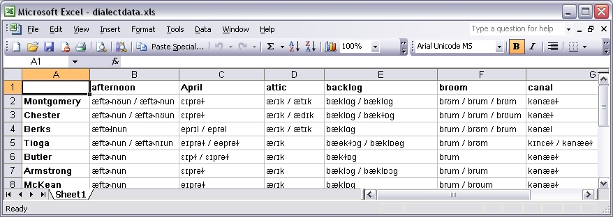
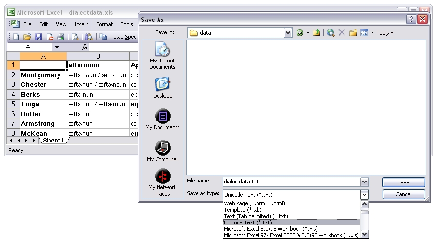

For analysis in Gabmap you need two things:
Example: Demo-Pennsylvania.utxt
The dialect data should be in a table where the rows represent the sites where the data was collected and the columns represent the data items. The data items are, for example, a number of words for which you collected dialect forms. You can prepare the data file using Microsoft Excel. This is how it would look:

For uploading the data file in Gabmap it has to be a tab-separated plain text file encoded as Unicode (UTF-8/UTF-16). To save the file in this format in Excel, you choose "Save As" in the "File" menu, and in the drop-down-menu "Save as type:" you choose "Unicode text (*.txt)". The resulting file with the extension .txt can be uploaded in Gabmap.

Other types of data than transcriptions can be analyzed in Gabmap, too. Your table might, for example, comprise numeric dialect data or categorical information on some syntactic variables. You can read more about data formats in Gabmap here.
Example: Demo-Pennsylvania.kml
In order to make dialect maps of your data, you need a basic map of the area you are analyzing. This map is uploaded in Gabmap as a .kml or kmz. file, which can be created using Google Earth. Google Earth is a free software which you can download and install on your computer.
With Google Earth you can draw the borders of your area (add one ore more polygons) and add placemarks for the locations where the data was collected. Note that the place names have to be spelled exactly as in your data file. Optionally, you can add more details, like internal borders or rivers, to the map.
A short manual for making a map with Google Earth is available here. If you follow this manual you can skip the last step (Convert to RuG/L04), because the manual was made for the older Groningen software RuG/L04, but in Gabmap you can upload the .kml file directly.
If you already have a list of locations with coordinates, you can find a tool here for converting it to .kml. Then you can open the converted file in Google Earth to add borders.